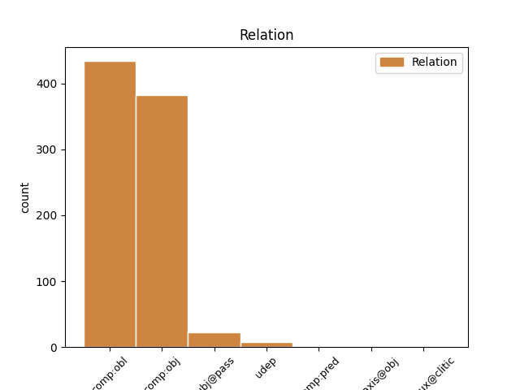
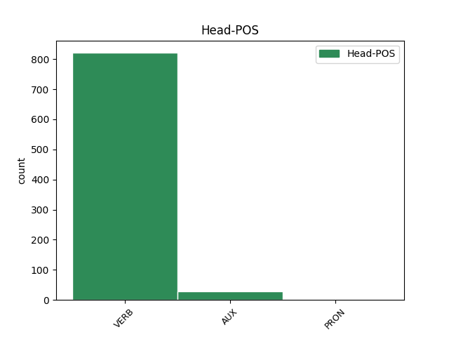
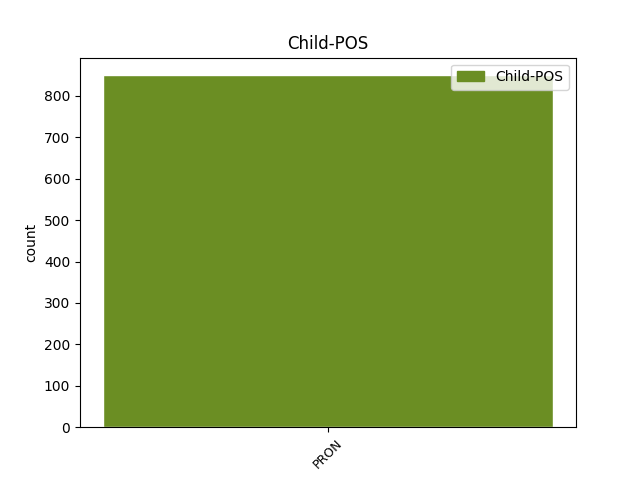

Distribution of features within this leaf



Agreement Rules sorted by frequency.
- When the dependent token is the oblique complements(comp:obl) of the head token, and the dependent token is PRON.
1 Albo _ _ _ _ 0 _ _ _
2 jej on PRON ppron3:sg:dat:f:ter:akc:npraep Case=Dat|Gender=Fem|Number=Sing|Person=3|PrepCase=Npr|PronType=Prs|Variant=Long 4 comp:obl _ _
3 się _ _ _ _ 0 _ _ _
4 spodoba spodobać VERB fin:sg:ter:perf Aspect=Perf|Mood=Ind|Number=Sing|Person=3|Tense=Fut|VerbForm=Fin|Voice=Act 0 _ _ _
5 nasza _ _ _ _ 0 _ _ _
6 inicjatywa _ _ _ _ 0 _ _ _
7 , _ _ _ _ 0 _ _ _
8 albo _ _ _ _ 0 _ _ _
9 nas _ _ _ _ 0 _ _ _
10 zawiesi _ _ _ _ 0 _ _ _
11 . _ _ _ _ 0 _ _ _
1 Gliniarze _ _ _ _ 0 _ _ _
2 biegną _ _ _ _ 0 _ _ _
3 do _ _ _ _ 0 _ _ _
4 ognia _ _ _ _ 0 _ _ _
5 , _ _ _ _ 0 _ _ _
6 ale _ _ _ _ 0 _ _ _
7 jego _ _ _ _ 0 _ _ _
8 ochroniarz _ _ _ _ 0 _ _ _
9 ciągle _ _ _ _ 0 _ _ _
10 go on PRON ppron3:sg:gen:m1:ter:nakc:npraep Animacy=Hum|Case=Gen|Gender=Masc|Number=Sing|Person=3|PrepCase=Npr|PronType=Prs|Variant=Short 11 comp:obj _ _
11 pilnuje pilnować VERB fin:sg:ter:imperf Aspect=Imp|Mood=Ind|Number=Sing|Person=3|Tense=Pres|VerbForm=Fin|Voice=Act 0 _ _ _
12 . _ _ _ _ 0 _ _ _
1 Chciał _ _ _ _ 0 _ _ _
2 by _ _ _ _ 0 _ _ _
3 m _ _ _ _ 0 _ _ _
4 jednak _ _ _ _ 0 _ _ _
5 państwu _ _ _ _ 0 _ _ _
6 przypomnieć _ _ _ _ 0 _ _ _
7 , _ _ _ _ 0 _ _ _
8 że _ _ _ _ 0 _ _ _
9 dochody _ _ _ _ 0 _ _ _
10 pochodzące _ _ _ _ 0 _ _ _
11 z _ _ _ _ 0 _ _ _
12 aukcji _ _ _ _ 0 _ _ _
13 pozostaną _ _ _ _ 0 _ _ _
14 w _ _ _ _ 0 _ _ _
15 państwach _ _ _ _ 0 _ _ _
16 członkowskich _ _ _ _ 0 _ _ _
17 ; _ _ _ _ 0 _ _ _
18 nie _ _ _ _ 0 _ _ _
19 zostaną zostać AUX fin:pl:ter:perf Aspect=Perf|Mood=Ind|Number=Plur|Person=3|Tense=Fut|VerbForm=Fin|Voice=Act 0 _ _ _
20 one on PRON ppron3:pl:nom:m3:ter:akc:npraep Animacy=Inan|Case=Nom|Gender=Masc|Number=Plur|Person=3|PrepCase=Npr|PronType=Prs|Variant=Long 19 subj@pass _ _
21 wyprowadzone _ _ _ _ 0 _ _ _
22 za _ _ _ _ 0 _ _ _
23 granicę _ _ _ _ 0 _ _ _
24 , _ _ _ _ 0 _ _ _
25 do _ _ _ _ 0 _ _ _
26 innych _ _ _ _ 0 _ _ _
27 krajów _ _ _ _ 0 _ _ _
28 , _ _ _ _ 0 _ _ _
29 pozostaną _ _ _ _ 0 _ _ _
30 w _ _ _ _ 0 _ _ _
31 kraju _ _ _ _ 0 _ _ _
32 , _ _ _ _ 0 _ _ _
33 w _ _ _ _ 0 _ _ _
34 ministerstwie _ _ _ _ 0 _ _ _
35 finansów _ _ _ _ 0 _ _ _
36 , _ _ _ _ 0 _ _ _
37 i _ _ _ _ 0 _ _ _
38 mogą _ _ _ _ 0 _ _ _
39 zostać _ _ _ _ 0 _ _ _
40 wykorzystane _ _ _ _ 0 _ _ _
41 na _ _ _ _ 0 _ _ _
42 szczytne _ _ _ _ 0 _ _ _
43 cele _ _ _ _ 0 _ _ _
44 , _ _ _ _ 0 _ _ _
45 a _ _ _ _ 0 _ _ _
46 nawet _ _ _ _ 0 _ _ _
47 na _ _ _ _ 0 _ _ _
48 realizację _ _ _ _ 0 _ _ _
49 celów _ _ _ _ 0 _ _ _
50 społecznych _ _ _ _ 0 _ _ _
51 . _ _ _ _ 0 _ _ _
1 Władze _ _ _ _ 0 _ _ _
2 miasta _ _ _ _ 0 _ _ _
3 wyznaczają _ _ _ _ 0 _ _ _
4 kryterium _ _ _ _ 0 _ _ _
5 , _ _ _ _ 0 _ _ _
6 jakie _ _ _ _ 0 _ _ _
7 muszą _ _ _ _ 0 _ _ _
8 spełniać _ _ _ _ 0 _ _ _
9 , _ _ _ _ 0 _ _ _
10 startujące _ _ _ _ 0 _ _ _
11 w _ _ _ _ 0 _ _ _
12 przetargu _ _ _ _ 0 _ _ _
13 firmy _ _ _ _ 0 _ _ _
14 - _ _ _ _ 0 _ _ _
15 jest być AUX fin:sg:ter:imperf Aspect=Imp|Mood=Ind|Number=Sing|Person=3|Tense=Pres|VerbForm=Fin|Voice=Act 0 _ _ _
16 nim on PRON ppron3:sg:inst:n:ter:akc:npraep Case=Ins|Gender=Neut|Number=Sing|Person=3|PrepCase=Npr|PronType=Prs|Variant=Long 15 comp:pred _ _
17 najniższa _ _ _ _ 0 _ _ _
18 cena _ _ _ _ 0 _ _ _
19 oferty _ _ _ _ 0 _ _ _
20 . _ _ _ _ 0 _ _ _
1 - _ _ _ _ 0 _ _ _
2 Ja ja PRON ppron12:sg:nom:m1:pri Animacy=Hum|Case=Nom|Gender=Masc|Number=Sing|Person=1|PronType=Prs 8 parataxis@obj _ _
3 do _ _ _ _ 0 _ _ _
4 pani _ _ _ _ 0 _ _ _
5 męża _ _ _ _ 0 _ _ _
6 - _ _ _ _ 0 _ _ _
7 wyjaśnił _ _ _ _ 0 _ _ _
8 em być AUX aglt:sg:pri:imperf:wok Aspect=Imp|Clitic=Yes|Number=Sing|Person=1|Variant=Long 0 _ _ _
9 . _ _ _ _ 0 _ _ _
Disagree Examples:
1 Czemu _ _ _ _ 0 _ _ _
2 mi ja PRON ppron12:sg:dat:m1:pri:nakc Animacy=Hum|Case=Dat|Gender=Masc|Number=Sing|Person=1|PronType=Prs|Variant=Short 4 comp:obl _ _
3 ją _ _ _ _ 0 _ _ _
4 obrzydzacie obrzydzać VERB fin:pl:sec:imperf Aspect=Imp|Mood=Ind|Number=Plur|Person=2|Tense=Pres|VerbForm=Fin|Voice=Act 0 _ _ _
5 ? _ _ _ _ 0 _ _ _
1 Czemu _ _ _ _ 0 _ _ _
2 mi _ _ _ _ 0 _ _ _
3 ją on PRON ppron3:sg:acc:f:ter:akc:npraep Case=Acc|Gender=Fem|Number=Sing|Person=3|PrepCase=Npr|PronType=Prs|Variant=Long 4 comp:obj _ _
4 obrzydzacie obrzydzać VERB fin:pl:sec:imperf Aspect=Imp|Mood=Ind|Number=Plur|Person=2|Tense=Pres|VerbForm=Fin|Voice=Act 0 _ _ _
5 ? _ _ _ _ 0 _ _ _
1 Kochamy _ _ _ _ 0 _ _ _
2 Polskę _ _ _ _ 0 _ _ _
3 , _ _ _ _ 0 _ _ _
4 lecz _ _ _ _ 0 _ _ _
5 fakty _ _ _ _ 0 _ _ _
6 składające _ _ _ _ 0 _ _ _
7 się _ _ _ _ 0 _ _ _
8 na _ _ _ _ 0 _ _ _
9 polską _ _ _ _ 0 _ _ _
10 rzeczywistość _ _ _ _ 0 _ _ _
11 działają działać VERB fin:pl:ter:imperf Aspect=Imp|Mood=Ind|Number=Plur|Person=3|Tense=Pres|VerbForm=Fin|Voice=Act 0 _ _ _
12 nam my PRON ppron12:pl:dat:m1:pri Animacy=Hum|Case=Dat|Gender=Masc|Number=Plur|Person=1|PronType=Prs 11 comp:obl _ _
13 na _ _ _ _ 0 _ _ _
14 nerwy _ _ _ _ 0 _ _ _
15 . _ _ _ _ 0 _ _ _
1 W _ _ _ _ 0 _ _ _
2 jakich _ _ _ _ 0 _ _ _
3 godzinach _ _ _ _ 0 _ _ _
4 urzęduję _ _ _ _ 0 _ _ _
5 , _ _ _ _ 0 _ _ _
6 kto _ _ _ _ 0 _ _ _
7 mnie ja PRON ppron12:sg:acc:m1:pri:akc Animacy=Hum|Case=Acc|Gender=Masc|Number=Sing|Person=1|PronType=Prs|Variant=Long 8 comp:obj _ _
8 odwiedza odwiedzać VERB fin:sg:ter:imperf Aspect=Imp|Mood=Ind|Number=Sing|Person=3|Tense=Pres|VerbForm=Fin|Voice=Act 0 _ _ _
9 . _ _ _ _ 0 _ _ _
1 Jeżeli _ _ _ _ 0 _ _ _
2 unosisz unosić VERB fin:sg:sec:imperf Aspect=Imp|Mood=Ind|Number=Sing|Person=2|Tense=Pres|VerbForm=Fin|Voice=Act 0 _ _ _
3 ją on PRON ppron3:sg:acc:f:ter:akc:npraep Case=Acc|Gender=Fem|Number=Sing|Person=3|PrepCase=Npr|PronType=Prs|Variant=Long 2 comp:obj _ SpaceAfter=No
4 , _ _ _ _ 0 _ _ _
5 wtedy _ _ _ _ 0 _ _ _
6 unoszą _ _ _ _ 0 _ _ _
7 się _ _ _ _ 0 _ _ _
8 także _ _ _ _ 0 _ _ _
9 ramiona _ _ _ _ 0 _ _ _
10 . _ _ _ _ 0 _ _ _